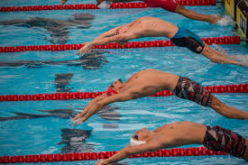
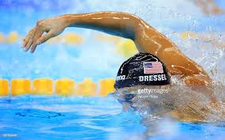
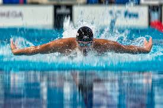
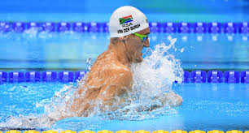

Growing up i had the chance to travel around Europe racing for both Ireland and munster.
I had the opportunity to visit Portugal, Spain, Scotland, England and Germany.
Swimming thought me valuable lessons about discipline, motivation and hard work. Over my many years swimming, a regular week would consist of about 20 hours a week in the pool and about 3-4 hours lifting weights
My favourite stroke is been butterfly. However, I have always been better at backcrawl.
My Swimming Club: Sundays Well
| Event | 100 Backstroke | 100 Frontcrawl | 100 Butterfly | 100 Breastroke |
|---|---|---|---|---|
|  |  |  |  | |
| Time | 57 | 55 | 59 | 68 |
| Competition | Irish Interprovencials | Irish Interprovencials | British Championships | British Championships |